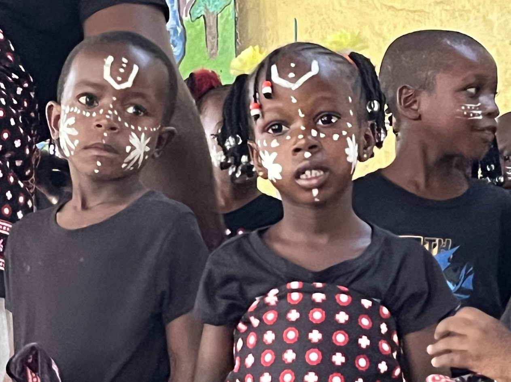
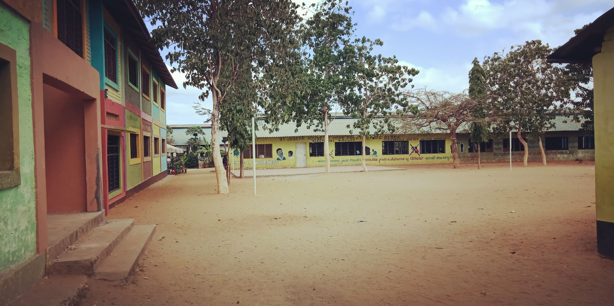
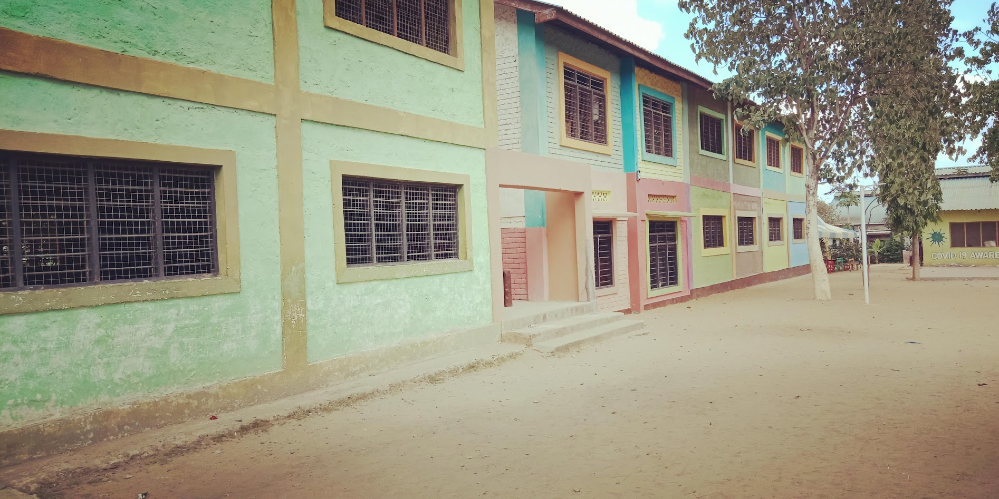
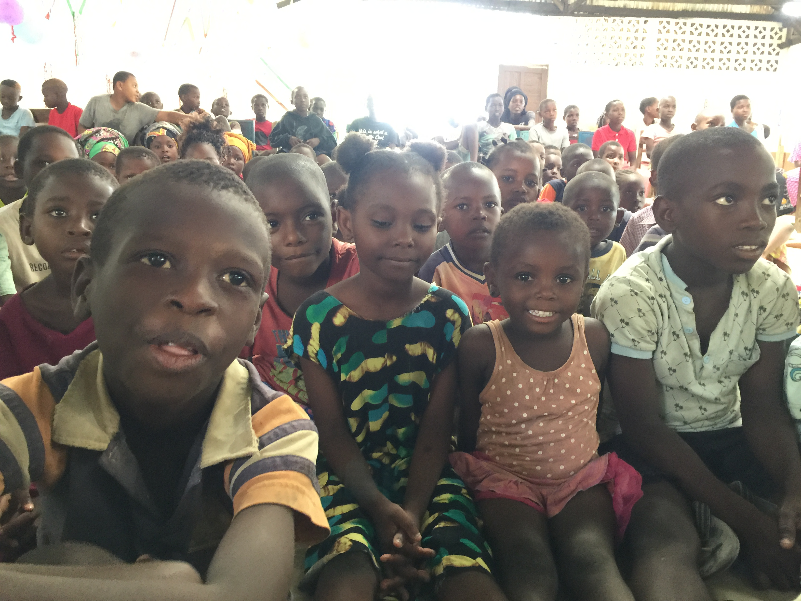
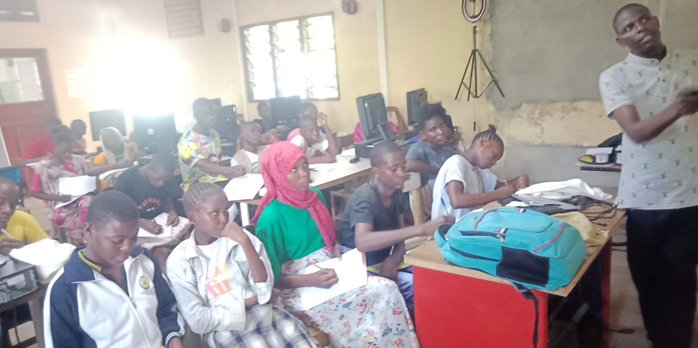
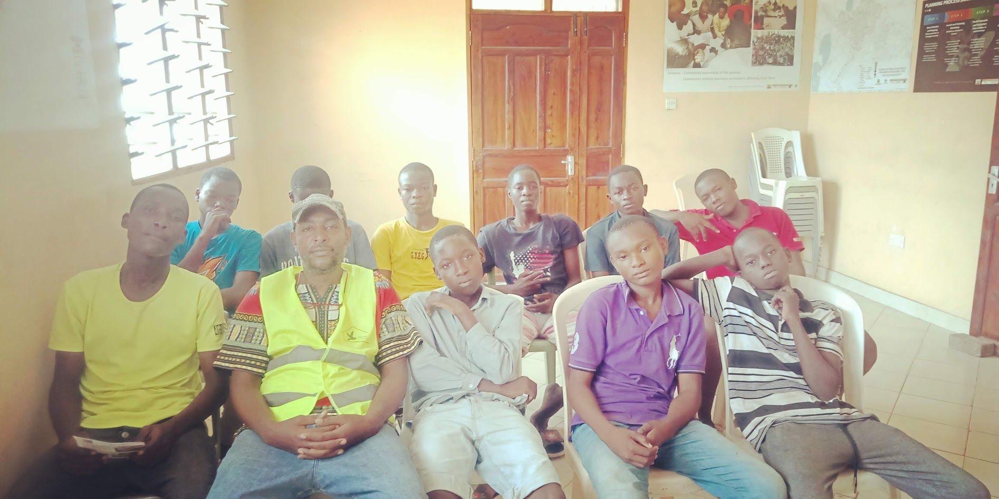
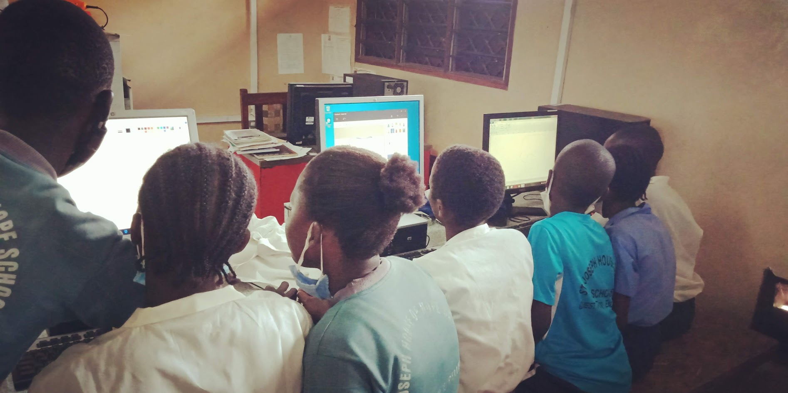
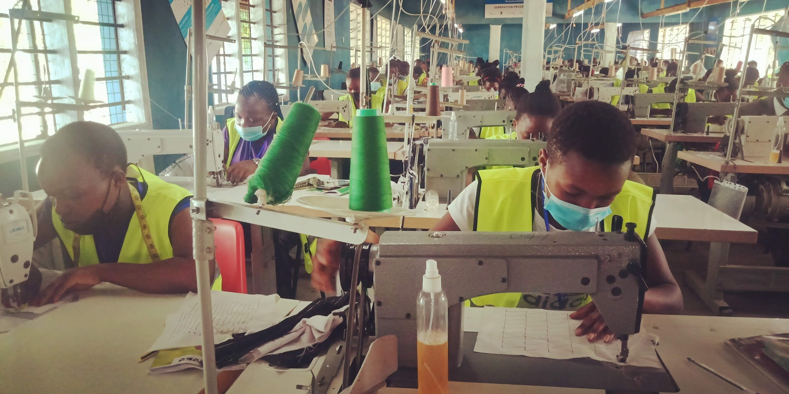
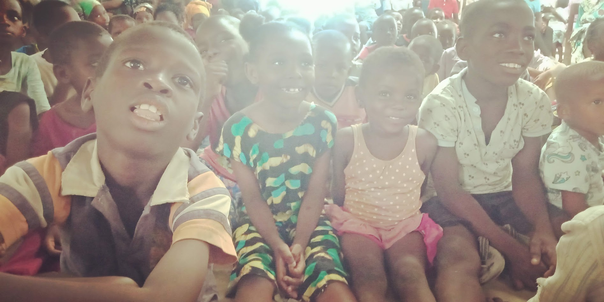
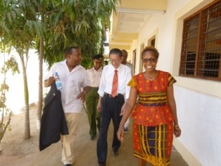

St. Joseph Early Childhood Centre
Our starting point for little ones – safe, loving, and playful learning environment.
St. Joseph House of Hope Foundation walks with children, youth, and families in Kilifi—providing access to quality education, practical skills, and spiritual support so they can build a better future.

A Christian foundation institution,in Kenya, dedicated to raising children and youth through quality education, skills training, spiritual guidence and community support.
St. Joseph House of Hope Foundation began as a simple nursery school with a big dream: to create a safe, nurturing space for children from vulnerable families along the coast of Kenya. Over the years, that dream has grown into a multi-campus work of grace—spanning nursery, primary, ministry center, and vocational training centers.
We are rooted in Kilifi, led by local leaders, and driven by a vision to see every child discover their identity, dignity, and purpose in God. Our work is holistic: we care for minds, hands, and hearts.
Through partnership with churches, friends, and organizations around the world, we are building practical, sustainable pathways for children and youth to break cycles of poverty and step into a brighter future.
To provide holistic education and support to vulnerable children and youth in Kilifi, empowering them to live Christ-centered, impactful lives.
A hopeful, thriving Kilifi where every child is loved, educated, and equipped to transform their community.
From nursery all the way to vocational training, our centers are spread across Kilifi to reach children and youth where they are.
Our starting point for little ones – safe, loving, and playful learning environment.
Strong foundations in literacy, numeracy, and character, rooted in faith.
Partner schools + bursaries and mentorship for teenagers.
ICT, trades, and entrepreneurship training for youth and young mothers.
From early childhood to young adulthood, we walk with learners at every stage—creating a continuous pathway of growth.
Strong foundations in literacy, numeracy, and character for our youngest learners.
Guiding teenagers through a critical season of identity, academic growth, and decision-making.
Equipping youth with practical skills that open doors to work and entrepreneurship.
Walking with families through prayer, counseling, and practical support in times of need.
From nursery to vocational training, our campuses provide safe, nurturing environments where children and youth can grow, learn, and discover their purpose.




Behind every number is a child, a story, and a testimony of what God is doing through simple obedience and partnership.
For more than a two decade, St. Joseph House of Hope Foundation has been planting seeds of hope along the coast of Kenya. Many of our former pupils are now young adults—working, studying, and serving in their communities.
Our dream is to deepen and expand this impact: strengthening our community, improving lives with the message of Christ-centered approach and creating more opportunities for teenage mothers, out-of-school youth, and families on the margins.
When you partner with us, you are not just giving to a project; you are joining a story that God is writing in Kilifi—child by child, family by family.
*These are working estimates. We are currently updating our data and will publish a detailed annual impact report.
Every classroom, every smile, every transformed life tells the story of God's grace at work in our community.





The work in Kilifi is carried by prayer, generosity, and partnership. There is a place for you in this story.
Help us put God's Word into the hands of 20,000 people across Kenya! Every $8 sponsors one Bible for a child, family, or church leader.
Your financial support helps us keep children in school, strengthen our staff, and expand our facilities.
You can give a one-time gift or become a monthly partner.Churches, schools, businesses, and foundations can adopt a project, sponsor a classroom, or collaborate on skills programs.
We welcome long-term, relational partnerships built on mutual trust.We deeply value prayer for our staff, students, and community. Where possible, we also host small, purposeful visits.
Get in touch to receive specific prayer points or explore visit options.
P.O. Box 10334
Bamburi, Mombasa, Kenya
County: Kilifi
Constituency: Kilifi South
Location: Kanamai
Landmarks:
300 meters from Malindi–Mombasa Road
3 km from Mtawapa
13 km north of Mombasa Town
Telephone:
+254 722 677452
+254 722 933831
Email:
stjosephhousefoundation@gmail.com
For visits, partnerships, or invitations to present our work, please get in touch and we will gladly connect.